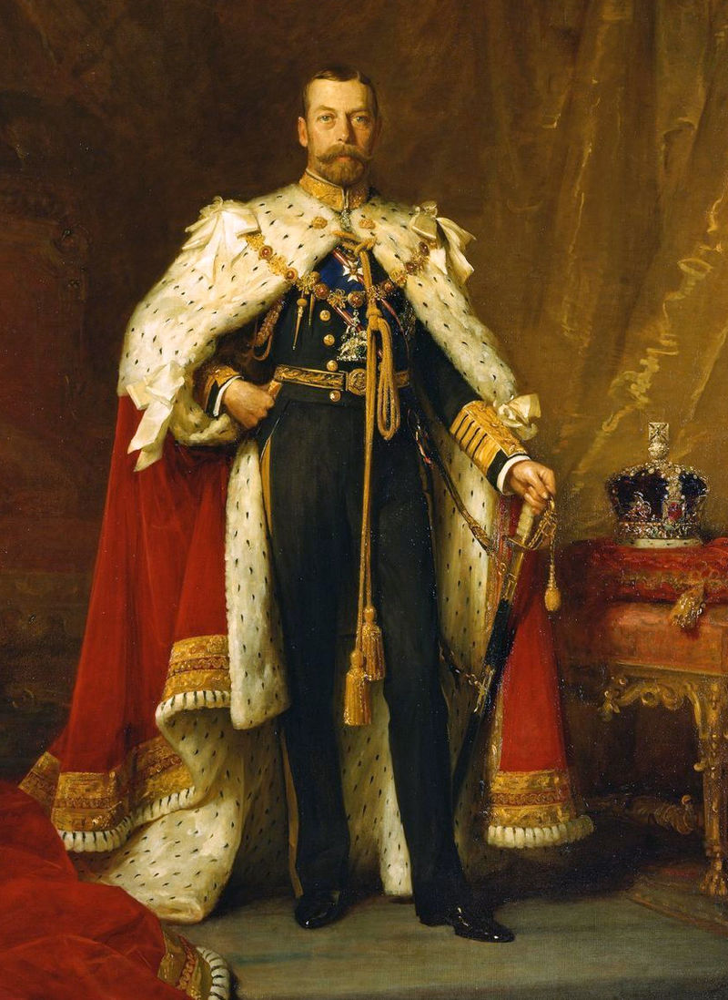

Содержание:
| George V | |
|---|---|
|  | |
| Король Великобритании и Северной Ирландии |
|
| Коронация: | 22 июня 1911 года |
| Предшественник: | Эдуард VII |
| Преемник: | Эдуард VIII |
| Император Индии |
|
| Вероисповедание: | Протестантизм |
| Рождение: | 3 июня 1865 |
| Смерть: | 20 января 1936 (70 лет) Сандрингем, Соединенное Королевство Великобритании и Северной Ирландии |
| Место погребения: | Виндзорский замок |
| Род: | Виндзорская династия |
| Отец: | Эдуард VII |
| Мать: | Александра Датская |
| Супруга: | Мария Текская |
| Дети: |
1. Эдуард (1894—1972) |
| Автограф: |  |
Биография
Ранние годы и образование
Родился 3 июня 1865 года в Мальборо-хаусе (Лондон); при крещении получил имя Георг Фридрих Эрнст Альберт. Его отец — Эдуард VII, мать — Александра Датская. Она приходится родной сестрой Марии Фёдоровне — супруге российского императора Александра III и матери последнего российского императора Николая II. Георг V внешне был очень схож с Николаем II, своим двоюродным братом по материнской линии: мать Георга Александра и мать Николая Дагмар были дочерьми короля Дании Кристиана IX и королевы Луизы, урождённой принцессы Гессен-Кассельской[1]. Германский император Вильгельм II тоже доводился ему двоюродным братом (Вильгельм был сыном английской принцессы и германской императрицы Виктории и внуком британской королевы Виктории). Будучи вторым сыном, Георг получил военно-морское образование. В сентябре 1877 года 12-летний Георг вместе с братом был зачислен кадетом на учебный корабль HMS Britannia[2]. В течение трёх лет с 1879 года служил мичманом на корвете HMS Bacchante.
Герцог Йоркский
14 января 1892 года во время эпидемии гриппа скоропостижно скончался старший брат Альберт Виктор. Смерть брата сделала Георга вторым в линии престолонаследия. В мае 1892 года королева Виктория присвоила внуку титул герцога Йоркского. В июле 1893 года он женился на баден-вюртембергской принцессе Виктории Марии Текской, которая ранее была помолвлена с его старшим братом.
Принц Уэльский
После смерти королевы Виктории в январе 1901 года как наследник престола Георг получил герцогства Корнуолл в Англии и Ротсей в Шотландии, а 9 ноября 1901 года стал принцем Уэльским — после коронации своего отца Эдуарда VII.
Король и император
6 мая 1910 года скончался отец Георга король Эдуард VII. Георг был провозглашён новым королём и короновался 22 июня 1911 года в Вестминстерском аббатстве. Точно в момент его коронации были запущены двое башенных часов на здании Royal Liver Building — самые большие часы Великобритании с 1911 года по настоящее время[3].
В Англии новый король столкнулся с двумя сложными политическими ситуациями. Палата лордов отвергла бюджет, предложенный палатой общин; последняя в ответ выдвинула билль о парламенте, существенно ограничивавший власть палаты лордов. По требованию премьер-министра Герберта Асквита король был вынужден содействовать принятию билля о парламенте. Вторая возникла из-за предложения о введении гомруля (самоуправления) в Ирландии. Перед угрозой восстания король в 1914 году созвал представителей всех партий, но решение по этому вопросу так и не было принято. Англо-ирландский договор был подписан лишь в 1921 году.
Во время Первой мировой войны Георг V отказался от всех личных и семейных германских титулов и изменил название королевского дома с Саксен-Кобург-Готского на Виндзорский.
рождественское послание (1934)
Награды
Георг V был представлен ко многим почётным наградам и званиям, включая следующие:
Воинские звания
Король Георг V был удостоен следующих воинских званий:
Бельгии Альберт I.1914. Примечательно внешнее
сходство Николая II и Георга V, бывших
двоюродными братьями
Дети
Дети Георга V и Марии Текской:
Вклад в филателию
Будучи ещё принцем, Георг был страстным филателистом. С марта 1893 года был почетным вице-президентом Лондонского филателистического общества, с марта 1896 по 1910 год — президентом этого общества. Заложил основу Королевской филателистической коллекции[6] и первым подписал почётный «Список выдающихся филателистов». Длительное время он никак не мог приобрести одну из самых редчайших марок мира — «Голубой Маврикий». В 1904 году принц Уэльский узнал, что на аукционе в Брюсселе будет выставлен чистый (негашёный) экземпляр «Голубого Маврикия» по вполне приемлемой цене. Принц в течение двух суток инкогнито съездил на брюссельский аукцион, чтобы приобрести «Маврикий», пояснив, что если бы от его имени туда поехал кто-нибудь, то сделка обошлась бы казне намного дороже. «Голубой Маврикий» тогда удалось приобрести за £1400 (что эквивалентно современным $200 000, хотя сегодня эта марка оценивается в $15 000 000). С тех пор на международных филателистических выставках время от времени демонстрируют «Голубой Маврикий» из королевской коллекции вместе с позднее приобретённым «Розовым Маврикием». При этом драгоценные экспонаты помещаются под пуленепробиваемое стекло, и посмотреть на них собираются многочасовые очереди желающих.